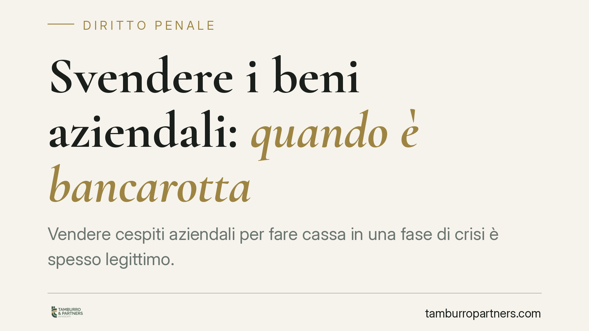

Svendere i beni aziendali: quando è bancarotta
Vendere cespiti aziendali per fare cassa in una fase di crisi è spesso legittimo. Ma se i beni escono dal patrimonio a prezzi ingiustificatamente bassi, a danno dei creditori, l'operazione può integrare bancarotta fraudolenta. La Cassazione penale ha fissato criteri precisi per separare la gestione lecita della difficoltà dalla sottrazione dolosa di risorse.

Il fatto e perché conta
L'imprenditore in difficoltà cerca liquidità. Una delle vie più immediate è la vendita di macchinari, immobili, magazzino. Finché l'operazione resta economicamente coerente, nulla di penalmente rilevante.
Il problema nasce quando i beni vengono ceduti a prezzi molto inferiori al loro valore, magari a soggetti collegati, e il ricavato si disperde senza che i creditori ne traggano beneficio. In caso di successivo fallimento, quella svendita può diventare oggetto di contestazione penale.
Inquadramento normativo
La fattispecie di riferimento è la bancarotta fraudolenta patrimoniale, prevista dall'art. 216 della legge fallimentare (R.D. 267/1942). La norma punisce l'imprenditore che ha "distratto, occultato, dissimulato, distrutto o dissipato" in tutto o in parte i propri beni, in danno dei creditori.
Per gli amministratori di società, il richiamo opera attraverso l'art. 223 L.F., che estende loro le pene dell'art. 216. Lo stesso art. 223, al comma 2 n. 2, prevede una fattispecie autonoma: quella di chi ha cagionato o concorso a cagionare il dissesto della società con operazioni dolose. Si tratta di due piani distinti. La bancarotta per distrazione o dissipazione richiede il dolo generico, cioè la coscienza e volontà di sottrarre i beni alla garanzia dei creditori; le operazioni dolose dell'art. 223 co. 2 n. 2 hanno struttura diversa e presuppongono un nesso causale con il dissesto.
È utile una precisazione di coordinamento con il Codice della crisi d'impresa e dell'insolvenza (D.Lgs. 14/2019). L'art. 216 L.F. è stato trasfuso nell'art. 322 CCII (bancarotta fraudolenta dell'imprenditore), mentre la disciplina relativa agli amministratori di società, già contenuta nell'art. 223 L.F., si colloca nell'art. 329 CCII. Non si tratta quindi di un continuum "dall'art. 322 in avanti": le due fattispecie stanno in articoli distinti.
Il criterio guida: coerenza economica o depauperamento
Secondo l'orientamento consolidato della Sezione V penale della Cassazione, la linea di confine passa per la coerenza economica dell'operazione. Una vendita, anche sottocosto, può essere lecita se risponde a una logica imprenditoriale verificabile e se il ricavato rientra nel circuito dell'impresa, a vantaggio dei creditori.
Diventa penalmente rilevante quando produce un depauperamento ingiustificato del patrimonio, cioè una riduzione delle risorse disponibili per i creditori senza una ragione economica sostenibile.
Gli indici valorizzati dalla giurisprudenza
I giudici non si fermano al dato formale del contratto. Valutano una serie di elementi concreti:
- lo scarto tra prezzo pattuito e valore reale del bene;
- i rapporti tra venditore e acquirente, con particolare attenzione ai soggetti collegati o riconducibili alla stessa compagine;
- la destinazione effettiva del ricavato: se rientra in azienda o viene disperso;
- la prossimità temporale tra l'operazione e la dichiarazione di insolvenza;
- la regolare contabilizzazione dell'atto e la tracciabilità dei flussi.
Nessuno di questi indici è decisivo da solo. È la loro combinazione a orientare il giudizio sul carattere distrattivo dell'operazione.
Implicazioni pratiche
Per l'imprenditore e per gli amministratori, il punto critico è che la bancarotta per distrazione richiede il dolo generico. Non occorre dimostrare un'intenzione specifica di frodare i creditori: è sufficiente la consapevolezza di sottrarre beni alla loro garanzia.
Questo limita fortemente la difesa fondata sulla sola buona fede o sull'intento soggettivo di "salvare l'azienda". Se gli indici oggettivi convergono verso il depauperamento ingiustificato, l'affermazione di aver agito in buona fede difficilmente basta a escludere la responsabilità.
Per il curatore fallimentare, al contrario, questi stessi indici sono la base per segnalare operazioni sospette e per le azioni a tutela della massa.
Cosa fare in concreto
- Acquisisci una perizia indipendente sul valore dei beni prima di cederli, conservandola insieme alla documentazione dell'operazione.
- Garantisci la tracciabilità del ricavato: dimostra dove sono confluite le somme e come sono state impiegate nell'interesse dell'impresa e dei creditori.
- Usa particolare cautela nelle cessioni a soggetti collegati: sono quelle su cui si concentra l'attenzione degli organi della procedura.
- Formalizza e contabilizza correttamente ogni atto, evitando operazioni non registrate o con prezzi non giustificabili.
- Valuta la composizione negoziata della crisi o gli altri strumenti del Codice della crisi, che consentono di gestire la difficoltà in un quadro trasparente anziché con atti unilaterali.
Disclaimer
Contributo informativo a cura di Tamburro & Partners - Avv. Giuseppe Tamburro. Non costituisce parere legale.
Ogni condominio ha una storia a sé.
Se gestisci un'amministrazione e vuoi un confronto su una specifica questione condominiale, scrivi allo studio. Ti rispondiamo entro un giorno lavorativo.